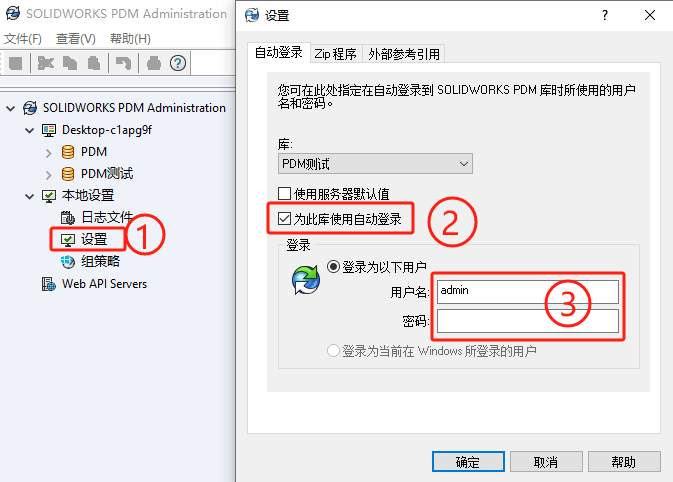
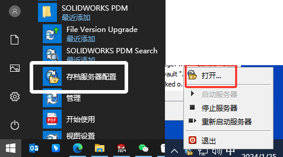
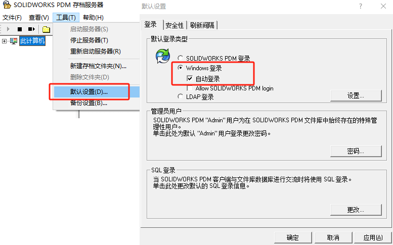

PDM自动登录
方法1
对特定电脑客户端的登录设置，可以在【PDM管理-本地设置-设置】里操作
1、库选择要修改的库。若要使库列出，您必须设置本地视图。
2、勾选“为此库使用自动登录”(“使用服务器默认值”项，是使用存档服务器上定义的默认登录。此选项只针对配置为使用 Windows 登录的库)
3、输入登录账号密码即可完成
方法2
如果是想让库中所有用户自动登录，可以在SOLIDWORKS PDM存档服务器上进行设置（这个操作只有在用户设置为Windows域用户登录时才有效）
首先，登录到存档服务器上，通过开始 > SOLIDWORKS PDM > 存档服务器配置。如果存档配置工具已经在服务器上运行了，就需要从系统托盘中打开，如下图所示
在Archive Server配置工具中，转到“工具”>“默认设置”。选择登录界面选项卡，在默认登录类型下选择Windows登录，然后选中“自动登录”。点击确定，所有设置为服务器默认值的客户端将使用其Windows登录设置自动登录。
参考
https://help.solidworks.com/2022/chinese-simplified/EnterprisePDM/admin/r_settings_auto_login.htm